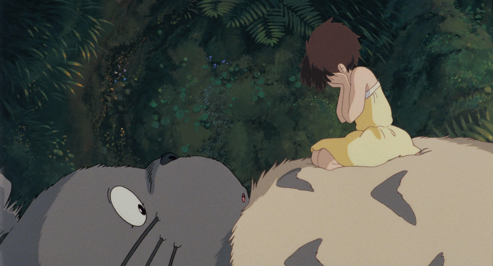
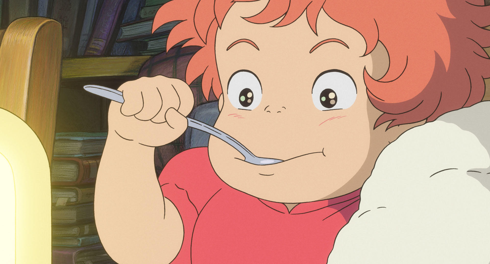

No.1 Kiki's Delivery Service

Kiki's Delivery Service by スタジオジブリ | STUDIO GHIBLI.
At 13 years old, Kiki, a young witch, sets off on a journey of training with her black cat, Jiji, to a new port town as part of her tradition. After being helped by a bakery owner, Osono, she finds a place to stay and starts a flying delivery service. Gradually, Kiki begins to adapt to her new surroundings. The story highlights her growth as she learns from her mistakes, making it a great recommendation for those who enjoy coming-of-age stories.
No.2 Spirited Away

Spirited Away by スタジオジブリ | STUDIO GHIBLI.
A 10-year-old girl named Chihiro gets lost in a mysterious world during a move and becomes unable to return to her original world. With the help of a boy named Haku, she starts working at the bathhouse run by Yubaba under the name "Sen." This Studio Ghibli film explores the meaning of work, portraying Chihiro's growth as she overcomes challenges and learns from her experiences.
No.3 My Neighbor Totoro

My Neighbor Totoro by スタジオジブリ | STUDIO GHIBLI.
In their new home, the Kusakabe family's daughters, Satsuki and Mei, enjoy exploring, and Mei encounters a mysterious creature. This Studio Ghibli film portrays magical creatures that only children can see, creating a fantastical atmosphere. The beautiful music and visuals add to the film's charm. It also highlights the heartfelt interactions between people, making it a great recommendation for those who enjoy human drama.
No.4 Castle in the Sky

Castle in the Sky by スタジオジブリ | STUDIO GHIBLI.
Pazu, an apprentice mechanic, meets a girl named Sheeta who falls from the sky. Sheeta is the heir to Laputa and possesses a levitating stone, making her a target for both pirates and the military. Pazu fights to rescue Sheeta and find Laputa. The highlight of the story is Pazu's sincere desire to help Sheeta, driving his actions throughout their adventure.
No.5 Ponyo on the Cliff by the Sea

Ponyo on the Cliff by スタジオジブリ | STUDIO GHIBLI.
Sosuke, who lives by the seaside, meets a runaway fish named Ponyo, and the two quickly become friends. However, Ponyo’s father, Fujimoto, comes to take her back. The fate of Ponyo and Sosuke is the central focus, with the beautiful animation standing out as a key highlight of the film.